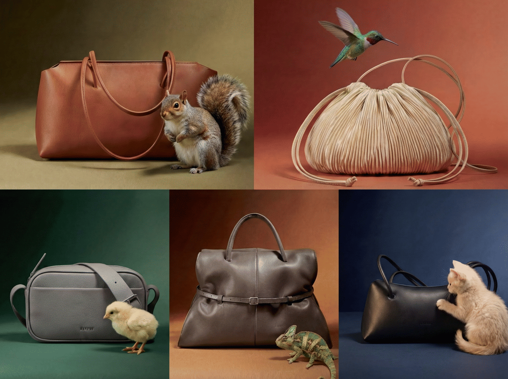

AI-кампания для ASKENT

О проекте
Мы создали серию из 5 динамичных вертикальных видеороликов (формат Reels / Shorts) полностью с использованием нейросетей. Проект показывает, как ИИ-генерация видео позволяет создавать захватывающий и вирусный контент для социальных сетей без организации сложных съемок, актеров и локаций.
Задача и
Решение
Цель:
Разработать 5 вертикальных роликов (по 10-15 секунд) для рекламной кампании в социальных сетях. Контент должен был привлекать внимание с первой секунды, иметь плавную кинематографичную анимацию и четко передавать атмосферу бренда.
Решение:
— Сначала мы сгенерировали статичные кадры в Midjourney, добившись идеальной композиции и соответствия брендбуку.
— Затем мы «оживили» эти сцены с помощью передовых нейросетей для генерации видео (Runway / Kling / Luma), настроив плавное движение камер и реалистичную физику объектов.
— На этапе постпродакшена мы сделали апскейл видео до 4K, провели цветокоррекцию и наложили саунд-дизайн (музыку и интершумы), чтобы ролики ощущались максимально дорого и профессионально.
Результат
Нажмите на видео, чтобы начать просмотр.